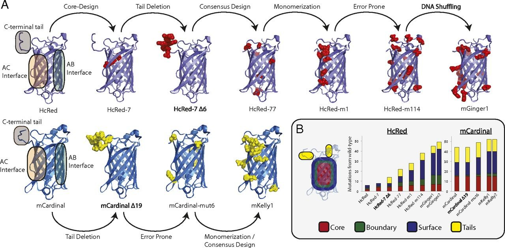

I am a current PhD student at MIT advised by Pulin Li, a member of the Whitehead Institute. I am interested in both natural and synthetic genetic circuits, those that enable diverse behaviors in nature and in the test tube. In particular, I am looking for design principles that may enable us to build more sophisticated circuits for synthetic biology. I use machine and statistical learning techniques to try to infer these principles from the wealth of high-dimensional biological data. I am fortunate to be supported by an MIT Presidential Fellowship and the NSF Graduate Research Fellowship.
Before starting my PhD, I was a research associate at Twist Bioscience and received my BS from Caltech.
Publications

Timothy M. Wannier, Sarah Gillespie, Nicholas Hutchins, R Scott McIsaac, Sheng-Yi Wu , Yi Shen, Robert E. Campbell, Kevin S Brown, Stephen L Mayo. Monomerization of Far-Red Fluorescent Proteins, Proceedings of the National Academy of Sciences, Nov. 13 (2018)
Poster Presentations